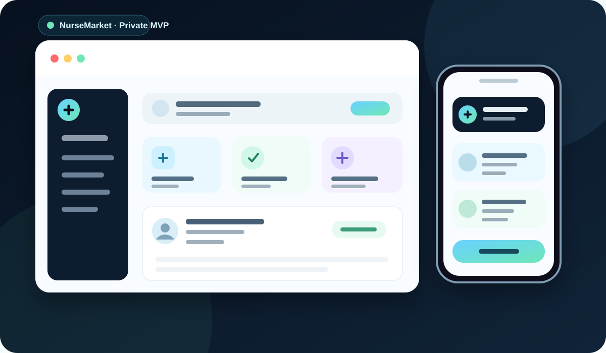

Frontend
Interfaces responsivas, componentes reutilizables, consumo de APIs y experiencias modernas con React, Next.js, JavaScript y TypeScript.
Desarrollo web · Santo Domingo, RD
Soy Eric Montero, desarrollador web Full-Stack Junior con preparación en frontend, backend, bases de datos, visualización de datos, desarrollo móvil y WordPress. Mi enfoque es convertir aprendizaje en proyectos reales y desplegados.
Perfil profesional
Mi portafolio está organizado para mostrar qué sé hacer, cómo lo he aprendido y dónde lo he aplicado.
Interfaces responsivas, componentes reutilizables, consumo de APIs y experiencias modernas con React, Next.js, JavaScript y TypeScript.
APIs REST, lógica de negocio y aplicaciones web con Django, Node.js/Express y Laravel, conectadas a bases de datos relacionales y NoSQL.
SQL, modelado relacional, PostgreSQL, MySQL, SQLite, MongoDB y visualización de datos con D3.js.
Fundamentos de Android con Kotlin/Jetpack Compose y creación u optimización de sitios WordPress, WooCommerce y SEO técnico.
Stack tecnológico
Una vista más clara para reclutadores y equipos técnicos que una lista de iconos sin contexto.
Proyectos seleccionados
Proyectos públicos y una muestra controlada de producto privado para demostrar frontend, backend, datos, APIs, Firebase y desarrollo móvil.
Portal gamer con catálogo, búsqueda, favoritos, lista de deseos, comunidad, marketplace y diferentes áreas de contenido. El proyecto demuestra capacidad para estructurar una aplicación amplia y desplegar una experiencia web funcional.

Producto privado · MVP avanzadoMarketplace de servicios de enfermería desarrollado en Flutter y Firebase. Incluye autenticación por roles, perfiles de pacientes y enfermeras, reservas gestionadas desde backend, chat y panel administrativo. El código fuente se mantiene privado por tratarse de un producto comercial.
Generador de rutina de estudio personalizable para organizar materias y días de estudio de forma sencilla y visual.
Ver códigoAplicación de inventario en Python con persistencia en SQLite y soporte de exportación a Excel.
Ver códigoVisualización interactiva de datos reales del PIB de Estados Unidos con D3.js, SVG y JavaScript.
Ver códigoBuscador de criaturas por nombre o ID que consume una API externa y presenta sus datos de forma dinámica.
Ver códigoProyecto móvil con interfaces de login, splash y detalle para practicar construcción de UI nativa en Android.
Ver códigoCarrito de compras interactivo con navegación de productos y gestión dinámica del estado del carrito.
Ver códigoGitHub
El perfil público incluye proyectos de bases de datos, React, visualización de datos, Python, JavaScript, CSS, Kotlin y ejercicios de certificación.
Formación y credenciales
La formación está presentada por relevancia para desarrollo de software, con enlaces verificables cuando están disponibles.
Formación integral en desarrollo web.
Ver credencialFormación enfocada en desarrollo web con JavaScript.
Ver credencialDiseño responsivo, accesibilidad y fundamentos modernos de frontend.
Ver certificadoAlgoritmos, lógica y estructuras de datos con JavaScript.
Ver certificadoBibliotecas y herramientas de desarrollo Front-End.
Ver certificadoVisualización de información con JavaScript y D3.js.
Ver certificadoSQL, terminal, bases de datos relacionales y PostgreSQL.
Ver certificadoHTML, CSS, diseño responsivo y proyectos prácticos.
Ver certificadoExperiencia
Además del desarrollo, cuento con experiencia en informática, monitoreo y operaciones, áreas que fortalecen disciplina, seguimiento y resolución de incidencias.
2023 — Actualidad
Desarrollo de sitios y aplicaciones web, e-commerce, WordPress, SEO técnico, performance y proyectos Full-Stack de práctica profesional.
Experiencia relacionada
Experiencia vinculada a desarrollo Front-End.
Experiencia relacionada
Experiencia en entorno de informática y soporte operativo.
Experiencia complementaria
Monitoreo, observación, seguimiento de eventos y trabajo con procedimientos operativos.
Contacto
Estoy abierto a oportunidades de desarrollo web, Front-End, Full-Stack Junior, soporte tecnológico y pasantías en República Dominicana o modalidad remota.